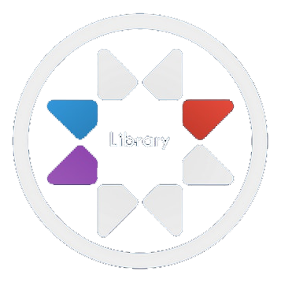

GNLib
Qu'est-ce que GNLib ?
GNLib est une librairie en gLua, créée par Guthen et Nogitsu.
Elle permet aux développeurs de faciliter le développement de leurs addons en leurs fournissant des fonctions et des VGUIs.
Quelque fonctionnalités
- Inclure un addon récursivement en respectant les côtés
- Avoir des VGUIs plus épurés que ceux de base
- Une palette de couleur integrée
- Un système de traduction automatique
- Des fonctions pratiques pour du Paint
- Une extension d’auto-complétion sur VSCode
- Et bien d'autre..